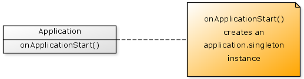

The singleton pattern provides a technique for creating a single instance of an object and for allowing convenient access to that object throughout the application.
The simplest technique for implementing a singleton within CFML is to create the object when your application is first started. This is easy to accomplish using the onApplicationStart() function with your Application.cfc file.

In code, we may simply write our onApplicationStart() function as:
{% highlight cfm %}An alternate technique to managing singletons within CFML is with a Singleton Factory. Factories are objects that know how to create other objects. In the case of a Singleton Factory, it ensures that only a single instance of each kind of object is created.
Your Singleton Factory should be created on application start up and have it's reference placed within the application scope (as described above), however the singletons it manages are held privately within it. Each singleton object is identified by a unique name and the getSingleton(name) function provides you with access to those singletons.
There are various techniques for implementing a Singleton Factory and the right approach will depend on your particular needs, but let's take a look at a fairly straightforward approach.
In this example we will create a Singleton Factory that provides you with access to a Datasource object and a UserGateway object, but as many objects as you need could be added.
For this implementation we will:
Let's first take a look at how our Singleton Factory might be initialised.
{% highlight cfm %}You can see that when the factory is created we need to provide some configuration data as a struct. This will contain details such as the datasource name, username and password.
Let's now take a look at how our createSingletons() function may be implemented.
{% highlight cfm %}Lastly, we just need a simple getSingleton() function to access our singletons:
{% highlight cfm %}Our SingletonFactory should be created on application startup.
{% highlight cfm %}Then to use our singleton factory in code we may write:
{% highlight cfm %}ColdSpring is the defacto object factory for CFML development. Let's take a quick look at how you might manage your singletons with ColdSpring.
After installing ColdSpring you need to create an XML file that describes the singleton objects you are using. For example, to describe our Datasource and UserGateway objects we may create a coldspring.xml file:
{% highlight xml %}You can see from this example that ColdSpring uses the terminology bean to mean object. The id attribute provides a unique name for the object and class provides the path to the singleton components. The singleton attribute is set to true to indicate that these are singleton objects.
The Datasource object has an init() function with three arguments; name, username and password. In this example we are hardcoding these directly into the XML file, but ColdSpring also allows details such as these to be variable parameters.
The ColdSpring factory is typically created on application startup.
{% highlight cfm %}ColdSpring provides a getBean() function to access the objects it manages, so to use ColdSpring we may write something like:
{% highlight cfm %}Which is essentially identical to how we use the SingletonFactory above.
The intent of the conventional singleton pattern requires that we ensure that only one instance of each singleton object can ever be created. Within CFML this is not possible in any practical way.
The better approach is to simply introduce a convention in your code about how singletons are created and managed such as by using one of the approaches described above.
When singleton objects are created they are essentially stored in the application scope (whether directly, or indirectly via a singleton provider). However, there are two choices in how they are used within the rest of your application.
The first approach is to refer to the singletons directly within the application scope. For example:
{% highlight cfm %}This approach is using a "global access" approach which can cause code to become more difficult to change over time. This technique has your code reaching out and accessing the global application scope which can be particularly problematic when used within CFC's. For example, accessing a global scope in this way can make automated unit testing difficult or impossible. Even if you are not doing unit testing now, this approach may prevent you from introducing automated unit testing in the future.
A preferable approach is to use a technique called dependency injection. With this approach you explicitly provide the singleton objects to any other objects that need them.
For example, suppose we have an object that needs to know about a certain configuration option. Using the "global access" approach we may write:
{% highlight cfm %}The "dependency injection" approach would be to provide the userCounter object to the component explicitly via a setUserCounter() function:
{% highlight cfm %}The setUserCounter() is called when the object is first created (typically using an object factory. Then the numberOfUsers() function just uses whatever user counter object was provided.
This second technique is no longer coupled to the application scope and results in more maintainable and testable code.
The conventional intent of the singleton pattern is to satisfy two criteria:
When this pattern was originally published it was based on certain features being present in whatever language implemented the pattern (such as C++ and Smalltalk), specifically private constructors, which prevent a class from being explicitly created, and class methods which are essentially 'global' methods that can be called without needing to create an instance of the class first.
CFML is a language of a different kind and does not have either private constructors or class methods. As a result the suggested patterns presented here differ from the conventional singleton patterns described elsewhere (see references below).
Is the Singleton pattern evil? If you research this pattern you will notice that the Singleton pattern has received a significant amount of criticism.
This criticism is focused particularly on the provide a global point of access aspect of the pattern.
In other words if you create a singleton such as application.yourAwesomeSingleton and then whenever you need it you just refer to it directly from within your components then this is considered the bad usage of a singleton. I.e. it is a global variable with a single point of access.
If you use dependency injection and inject your singleton into whichever objects need it, then your objects are no longer treating it as a global variable. This is then good usage of your singleton.
Singleton Pattern
http://en.wikipedia.org/wiki/Singleton_pattern
Singleton Pattern
http://www.oodesign.com/singleton-pattern.html
Singleton Design Pattern
http://sourcemaking.com/design_patterns/singleton
ColdSpring Framework
http://www.coldspringframework.org/
Flaw: Brittle Global State - Singletons
http://misko.hevery.com/code-reviewers-guide/flaw-brittle-global-state-singletons/
Singletons are Pathological Liars
http://misko.hevery.com/2008/08/17/singletons-are-pathological-liars/